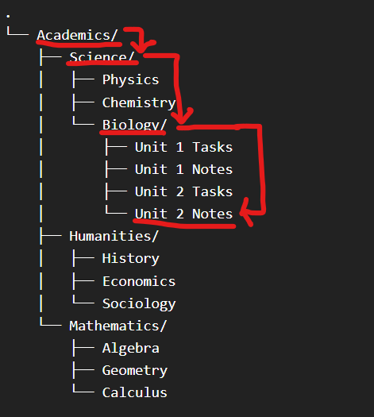

A folder hierarchy is a structured arrangement in which main folders contain subfolders that narrow categories progressively. This mirrors logical thinking. For example:
Academics → Science → Biology → Unit 2 Notes.
This layered system reduces clutter by limiting how many items appear at one level. When too many files exist in a single folder, navigation becomes inefficient. A well-designed hierarchy distributes information in manageable segments.
However, excessive nesting can also reduce efficiency. If a file requires navigating through ten layers of folders, retrieval slows down. The goal is balance — enough structure to provide clarity, but not so much that navigation becomes tedious.
Hierarchy should reflect how you think and work. If it feels unnatural, it will not be maintained.

Logical Naming
Naming is often underestimated. A poorly named file forces future-you to guess its contents. Names like “final2” or “document_new” provide no context. In contrast, descriptive naming such as “History_Essay_ColdWar_Draft1” communicates subject, purpose, and version instantly.
Logical nomenclature improves search functionality and prevents duplication. Including dates in a consistent format (e.g., 2026-03-Report) ensures chronological sorting. Avoid special characters that may cause system issues.
Effective naming reduces friction. It transforms searching from a guessing game into a predictable process. Over time, consistent naming conventions create a self-sustaining system that requires minimal effort to maintain.
Module Assessment
Question 1
What is a folder hierarchy?
Question 2
Which file name is the clearest?
Question 3
A student stores every subject inside one folder. What issue may occur?
Question 4
Which naming style is most organised?
Question 5
Why should file names include meaningful information?
Question 6
A student creates 20 nested folders before reaching a file. What is the problem?
Question 7
Which practice improves organisation?
Question 8
What does logical organisation mainly improve?
Question 9
A student saves homework in Subject → Physics → Assignments. This is an example of: